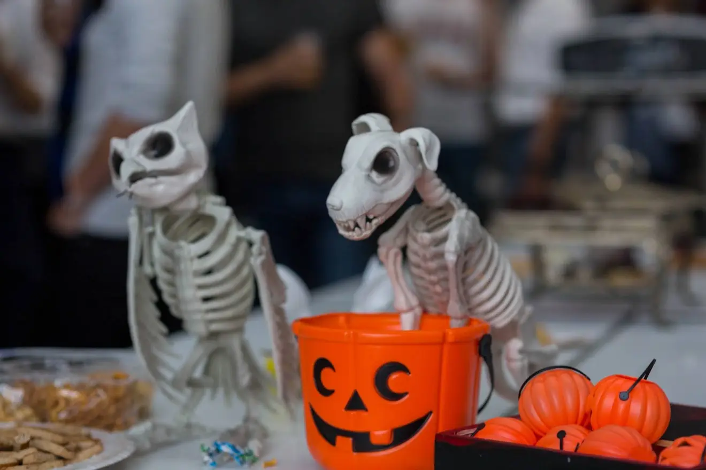

Game design · 2018
A Halloween ARG at Campus Biotech
Three weeks, no budget, a building full of neuroscientists. A 15-minute experience for the campus Halloween happy hour: part alternate reality game, part haunted maze, part virtual reality, with live actors.
- Role
- Creator and director
- Context
- Halloween happy hour, Campus Biotech, Geneva
- Team
- 10+ colleagues: actors, staff, a VR engineer
- Players
- 40+, in 15-minute runs

The brief
Campus Biotech’s happy hour is a monthly social evening with drinks and food, and since I joined, each one had a theme or a game. For Halloween, we went big. The evening brought together people from dozens of labs who rarely spoke to each other. I wanted a short, shared adventure that would get strangers talking, and show what the building’s own expertise could do when pointed at play.
An alternate reality game (ARG) blurs the line between the game and the real world: clues hide in real places, messages, objects and people, so players are never quite sure where the game begins.
Building it with what we had
The campus was full of skills, so the job was to find them and ask. I recruited a VR engineer from an in-house team, staff for logistics, and colleagues willing to act. The VR sequence mixed footage we recorded live with parts built in Unity, and I spent many hours editing the film to make it properly eerie.
Each run lasted 15 minutes, chaining clues, elements of a haunted maze, the VR sequence and live characters into one story. Staggered entries kept the queue moving. Afterwards, I cut a trailer from the footage.

What I learned
It was the first time I ran the whole chain myself, from the concept to recruiting, building and directing. It worked because everyone found something in it for them: a part in a bigger project, and a chance to work with people whose expertise they’d never crossed paths with.
It also showed me a limit. Goodwill can build a great night, but not something lasting. Since then I’ve aimed for projects that are properly funded, which I achieved with the forum theatre and the 2026 museum evening.
Watch the trailer: YouTube